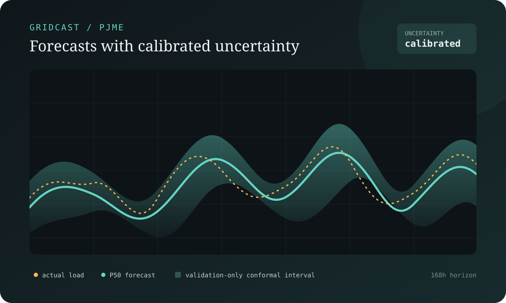
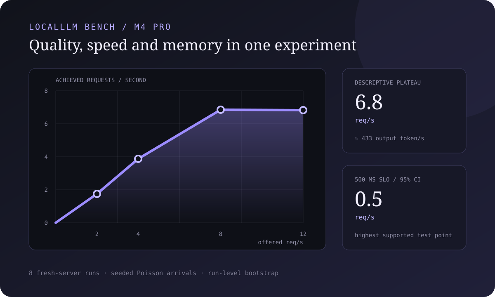
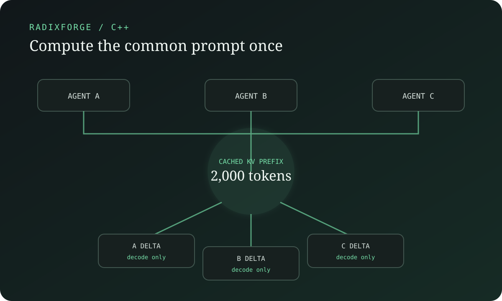
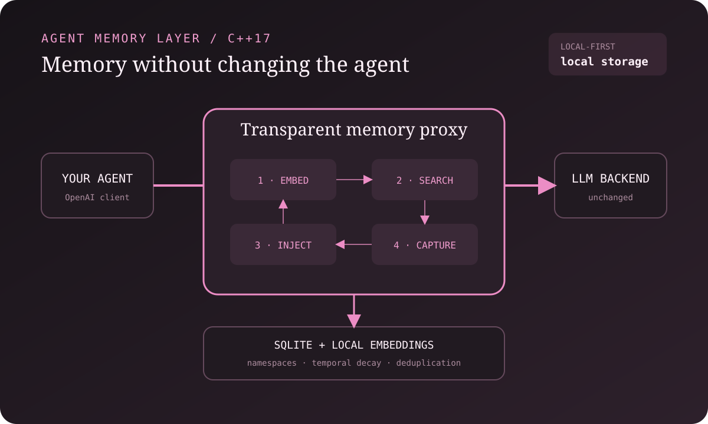

Production AI
LLM agents and retrieval
Tool-using agents, multi-agent orchestration, RAG, authorization-aware retrieval, Text2SQL and evaluation for operational workflows.
AI / ML Engineer · Florence, Italy · Remote Europe
My work sits between applied research and software engineering: LLM tools for operations, forecasting and decision systems, and the infrastructure needed to run them. I care about clear evaluation, useful interfaces and systems people can inspect.
Production AI
Tool-using agents, multi-agent orchestration, RAG, authorization-aware retrieval, Text2SQL and evaluation for operational workflows.
Machine learning
Hierarchical forecasting, calibrated uncertainty, scenario simulation, churn modelling and large-scale feature pipelines.
Engineering practice
Architecture, hands-on delivery, evaluation, observability, governance and deployment on AWS and Kubernetes.
A few areas I've worked on at Enel, described without internal names or confidential details.
2024 — now · Applied LLM systems
I work on AI-assisted incident resolution for IT operations. The systems follow documented procedures, query monitoring tools and network devices, and return their findings to the ticketing workflows engineers already use.
My role spans architecture, implementation and evaluation, in collaboration with operations teams in Italy and Spain.
The interesting part is not the orchestration itself; it is designing useful boundaries between automation and the engineers accountable for the outcome.
LangChain · LlamaIndex · AWS Bedrock · FastAPI · Kubernetes · pgvector
2023 — now · Forecasting and uncertainty
I helped take a multi-year forecasting programme from early prototype to production: hierarchical models for customer churn and payment-default disconnections, combined with conformal intervals and scenario simulation.
My role covered architecture, delivery, coordination of a small technical team, and working with the people who use the forecasts for planning.
A calibrated interval is often more useful than a single confident-looking number.
statsmodels · Nixtla · skforecast · conformal prediction · Spark · FastAPI
2025 · RAG · in production · serverless
Internal audit documentation is exactly the kind of corpus where a helpful, over-confident chatbot is worse than no chatbot. This one answers only from documents the person asking is actually cleared to see, and cites its sources. Serverless on AWS, shipped through a governed pipeline with security gating.
2020 — 2023 · Applied machine learning
Earlier work included churn and claim prediction on Spark, customer segmentation and cross-selling models, and anomaly detection for battery energy storage systems.
PySpark · XGBoost · CatBoost · H2O · MLflow · Airflow
Selected open-source work
Open-source experiments in forecasting and local AI systems. They are exploratory rather than production software, and the repositories document methods and limitations.

A leakage-safe forecasting workbench built around public PJM load and ERA5 weather: chronological validation, explicit baselines, probabilistic forecasts, conformal calibration and decision-aware evaluation.
Chronological validation · conformal intervals · public data
The stronger TimesFM result is reported separately because pretraining overlap cannot be ruled out.

A reproducible harness that evaluates local language models on quality, speed and memory together. It fingerprints binaries and hardware, replays seeded traffic, and bootstraps complete fresh-server runs rather than pretending requests are independent.
Seeded load · hardware fingerprints · run-level intervals
Raw throughput plateaus early; the confidence-supported 500 ms SLO point is much lower at 0.5 req/s.

A radix-tree orchestrator that reuses common prompts across agents by copying cached KV state through native llama.cpp APIs.

An OpenAI-compatible proxy for persistent local agent memory, with SQLite retrieval, local embeddings, temporal decay and per-agent namespaces.
Older work — bioinformatics, Kaggle competitions, early forecasting experiments — lives on my first account, github.com/Dhonveli.
I started in biology, not software. My master's was in computational biology at the University of Trento, and I spent a year at DKFZ and EMBL in Heidelberg working on single-cell eQTL mapping — trying to find which genetic variants change gene expression, in data where almost every signal is noise wearing a convincing costume. That work became a paper in Genome Biology; the containerised pipeline is still on my old GitHub account.
I don't think of that as a previous life. In biology, a result that looks good is not necessarily a result that is true; the difference often comes down to how the test was set up. That habit still shapes how I approach applied machine learning.
Then I moved into industry: first applied machine learning on customer data, then forecasting systems, and more recently LLM-based tools for operations. The common thread is an interest in evaluation and in the practical details around a model.
I'm drawn to energy, pharma and bio, and to organisations doing something worth doing. I live in Florence and work in Italian, English and Spanish.
I'm open to Senior and Lead AI/ML Engineering roles, including research-oriented engineering teams — remote across Europe or hybrid in Florence.
giordano.alvari@gmail.com
linkedin.com/in/giordano-alvari-137b7b10a
github.com/gioalvari
CV — PDF, one page